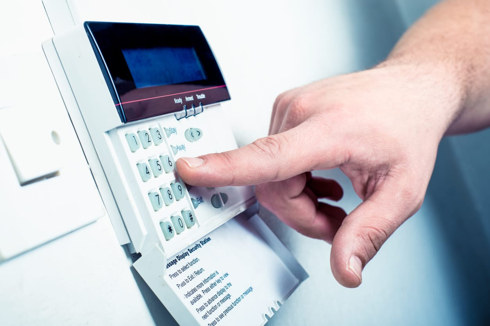

Tech VS Crime | |
Menu |
Burglar AlarmsBurglars like easy targets, and a home with a professionally installed and monitored security system is anything but. Multiple independent studies prove home alarm systems are the best way to protect your home against burglars. Direct correlation between home alarms and residential burglary rates Break-ins consistently decreased in areas where alarm system installations increased The study credits the alarms with the decrease in burglaries and overall crime rate 83% of convicted burglars tried to determine whether a house had alarm system, and most would then move on to an easier target Only 13% would continue with a burglary if the home has an alarm 60% said security cameras are a major consideration |